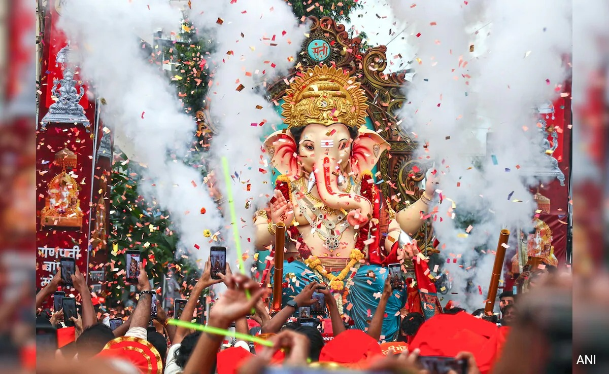
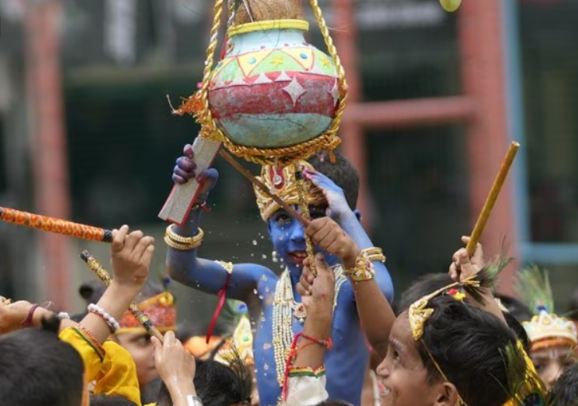
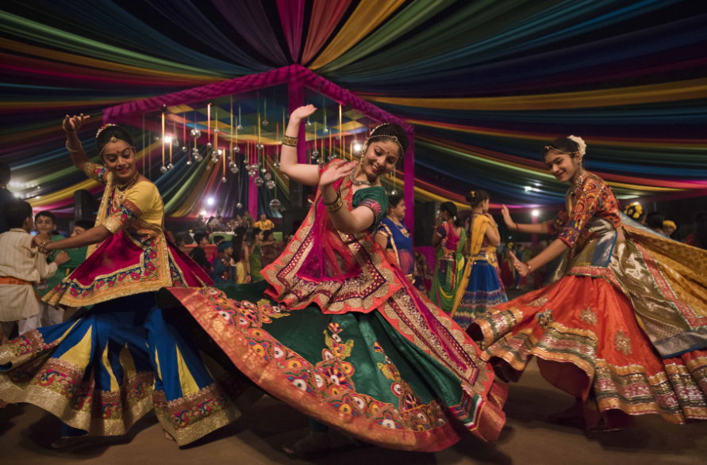
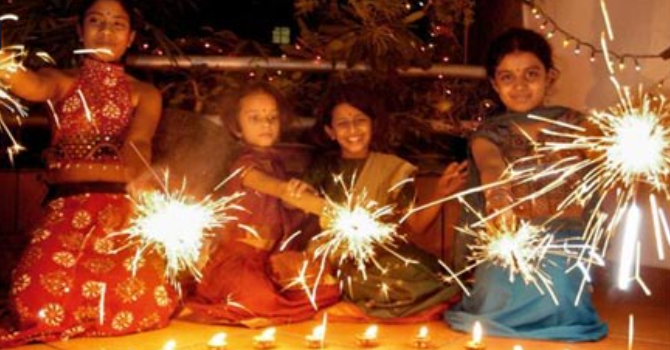
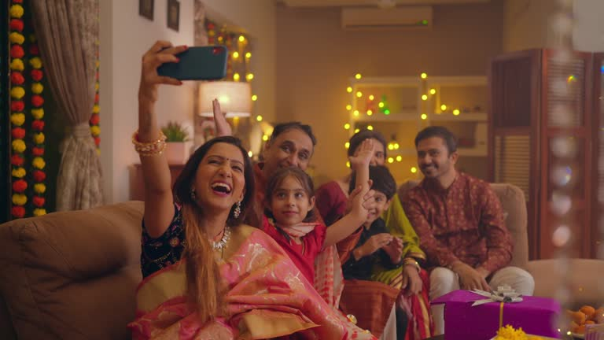
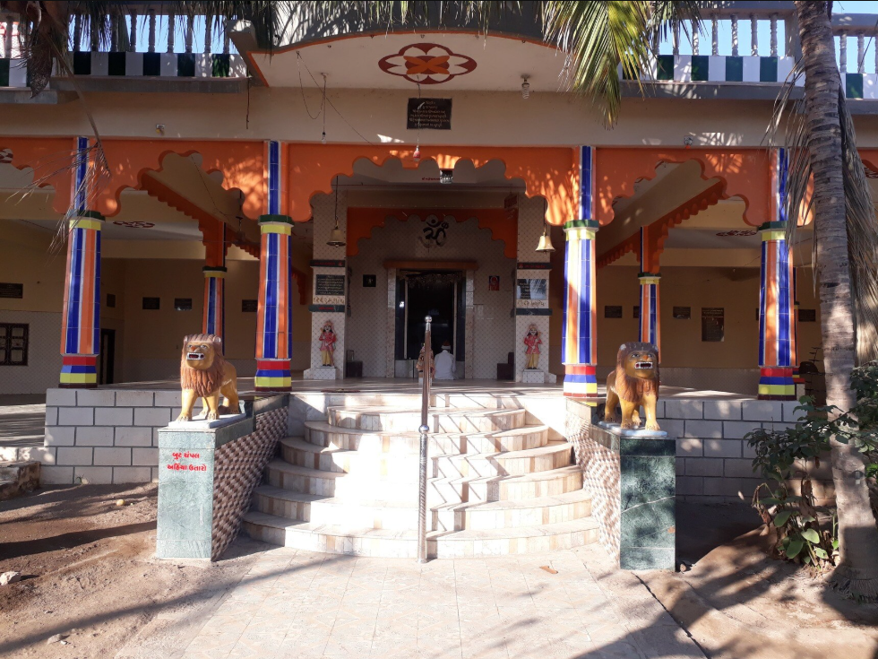
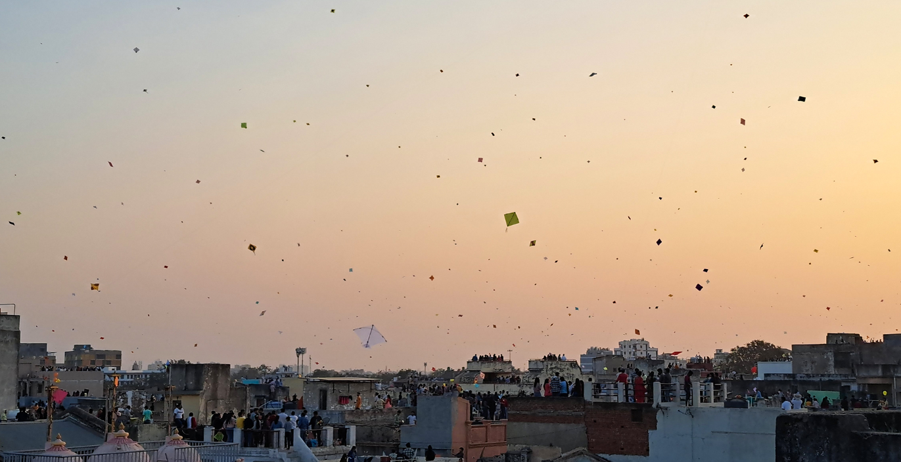
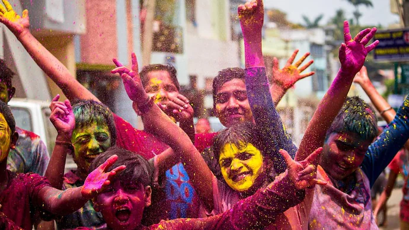
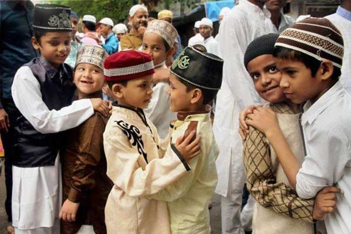
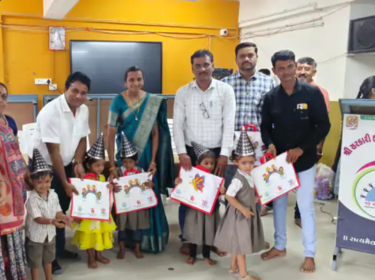

Experience a colourful blend of devotion, tradition, and unity.
🐘 Ganesh Chaturthi

Households install Lord Ganesha idols, perform daily aarti, and bid
farewell with vibrant immersion processions. In our village too, a
grand idol is installed at the Padar, drawing devotees throughout
the festival.
🌼 Janmashtami

At midnight, the birth of Lord Krishna is joyously celebrated with
devotional bhajans, the traditional Dahi Handi event, and children
dressed as Krishna and Radha. Across the village and at various
locations, earthen pots (matlis) are hung and ceremonially broken in
the spirit of Krishna’s childhood leelas. The festivities also
include Raas-Garba and soulful bhajans, where villagers participate
with deep devotion and enthusiasm.
💃 Navratri

During Navratri, the village comes alive with devotion and
celebration. A traditional Garbi (shrine) of the Goddess is
installed in the village square, where villagers gather every night
to perform vibrant Garba and offer prayers. The atmosphere glows
with oil lamps, colorful chaniya-cholis, and the rhythmic clapping
of hands, filling the air with energy and devotion throughout all
nine nights.
✨ Diwali

Homes shine with diyas and rangoli, Lakshmi Puja is offered, and
fireworks light the night sky to welcome prosperity. In our village,
each household decorates its entrance with oil lamps and intricate
rangoli, creating a breathtaking spectacle of light and color.
🎇 Gujarati New Year (Bestu Varas)

On the day after Diwali, villagers warmly greet one another with
“Happy New Year” and “Jay Shree Krishna,” embrace joyfully, share
sweets, and visit temples to mark the start of the New Year. Our
homes resonate with laughter and blessings as families come together
in festive spirit.
🔱 Kumbhanath Mahadev Festival

A grand celebration featuring Mahapuja, Kalash Yatra, and sacred
yajnas at the historic Mahadev temple.
🪁 Makar Sankranti / Uttarayan (14 Jan)

Skies fill with colourful kites while families exchange
sesame–jaggery sweets and gather around rooftop bonfires.
🔥 Holi & Dhuleti

The Holika bonfire is followed by a day of joyful colour play, water
fights, drums, and singing through village streets.
🕉️ Maha Shivaratri
Devotees fast and keep night‑long vigil at Kumbhanath Mahadev
temple, chanting bhajans and offering bel‑patra.
🌙 Eid Celebration

Eid is joyfully celebrated by the Muslim community in Kumbhan with
communal prayers, festive meals, and acts of charity. People dress
in traditional attire, exchange warm greetings like “Eid Mubarak,”
and share sweets and gifts with neighbors and friends, reflecting
unity and peace.
🎓 School Praveshotsav

A heartfelt welcoming ceremony marks the beginning of the academic
journey for new students. The event features the distribution of
educational kits, engaging cultural performances, and motivating
messages from community leaders—fostering a spirit of encouragement
and belonging.